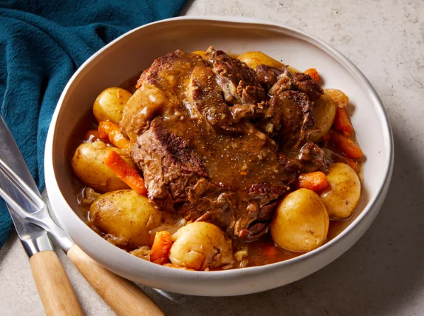

Pot Roast
Home

Instant Pot Pot Roast with Potatoes and Carrots
With an Instant Pot and simple ingredients like carrots and potatoes, you can have a flavorful, comforting pot roast in less time than using an oven or slow cooker.
Ingredients
- 4 tablespoons olive oil, divided
- 3 pounds beef chuck roast
- 2 cups beef broth
- 1 pound baby potatoes
- 1 ½ cups baby carrots
- 1 medium onion, quartered
- 1 packet dry onion soup mix
- ¼ cup water
- 2 ½ tablespoons cornstarch
- 1 ½ teaspoons garlic salt
- 1 teaspoon freshly ground black pepper
Steps
- Gather all ingredients
- Heat 2 tablespoons oil in a multi-functional pressure cooker (such as Instant Pot) set to the Sauté function. Add roast to hot oil and cook until browned all over, 4 to 5 minutes per side. Pour in broth.
- Combine potatoes, carrots, onion, soup mix, and remaining 2 tablespoons oil in a resealable plastic bag. Seal the bag and shake until vegetables are evenly coated.
- Pour mixture into the pressure cooker and spread out evenly.
- Close and lock the lid. Select high pressure according to the manufacturer's instructions; set the timer for 60 minutes. Allow 10 to 15 minutes for the pressure to build. Release the pressure carefully using the quick-release method according to the manufacturer's instructions, about 5 minutes. Unlock and remove the lid.
- Transfer roast and vegetables to a serving platter, leaving drippings in the pot.
- Select the Sauté function and bring drippings to a boil. Combine water and cornstarch in a bowl; pour into the drippings. Cook, stirring frequently, until gravy is slightly thickened, 2 to 3 minutes. Season with garlic salt and pepper. Slice roast and serve with vegetables and gravy.